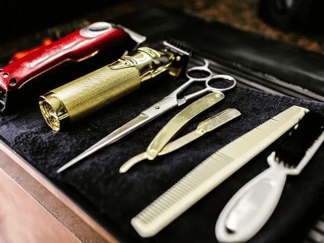
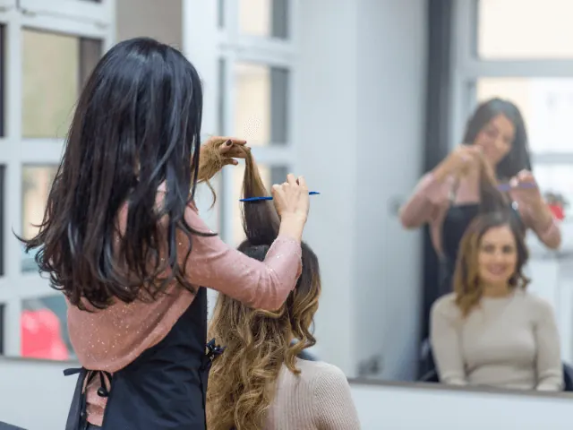

Partnerbijdrage
Voorkom een bad hair day met deze fantastische haarverzorgingstips!
Gepubliceerd op 24 augustus 2023, bijgewerkt op 26 februari 2024
Onderdeel van de gids Kappers in Nijmegen

Niets is zo vervelend als een bad hair day die je humeur verpest en je zelfvertrouwen naar beneden haalt. Maar maak je geen zorgen, we hebben een aantal geweldige haarverzorgingstips voor je waarmee je je lokken, gezond, glanzend en onder controle kunt houden. En alsof dat nog niet genoeg is, hebben we ook een paar geweldige kapsalons gevonden die je direct uit de brand kunnen helpen!
Hydratatie is de heilige graal voor gezond haar
Het geheim van prachtig haar begint bij voldoende hydratatie. Dus zorg ervoor dat je genoeg water drinkt, want hydratatie begint van binnenuit. Daarnaast kun je ook gebruikmaken van hydraterende haarproducten, zoals conditioners en haarmaskers. Kies producten die speciaal zijn ontworpen voor je haartype en breng ze regelmatig aan. Je zult merken dat je haar gehydrateerd, zacht en minder vatbaar voor pluizen en klitten blijft.
Temper de hitte en je haar zal je dankbaar zijn
Haardrogers, stijltangen en krultangen kunnen je haar beschadigen en uitdrogen als je ze te vaak gebruikt. Probeer het gebruik van deze hitte gereedschappen daarom tot een minimum te beperken. En als je ze dan toch wilt gebruiken, breng dan altijd een hitte beschermend product aan voordat je aan de slag gaat. Zorg er ook voor dat je de temperatuur niet te hoog instelt en je haar niet te lang blootstelt aan de hitte. Op die manier bescherm je je haar tegen schade en behoud je een gezonde uitstraling.

Kies je haarproducten verstandig en laat je haar stralen
Het kiezen van de juiste haarproducten is essentieel voor een goede haarverzorging. Ga voor shampoos en conditioners die perfect passen bij je haartype en specifieke behoeften, of je nu meer volume, hydratatie of kleurbehoud wilt. Daarnaast kunnen stylingproducten, zoals haargel, mousses en serums, je helpen om de gewenste look te creëren. Let er bij het kiezen van stylingproducten op dat ze je haar niet verzwaren of resten achterlaten. Experimenteer met verschillende merken en formules om te ontdekken welke het beste werken voor je haar.
Haarverzorgingstips: Bescherm je haar als een ware superheld(in) tegen de boosdoeners
Zonlicht, wind en vervuiling kunnen je haar beschadigen en dof maken. Maar maak je geen zorgen, we hebben de perfecte superkrachten om je haar te beschermen! Draag een leuke hoed of sjaal wanneer je in de zon bent om je haar te beschermen tegen schadelijke Uv-stralen. Vergeet ook niet regelmatig je haar te wassen om vuil en productresten te verwijderen. En gebruik leave-in conditioners of haaroliën om je haar te voeden en te beschermen. Met deze superkrachten geef je je haar een gezonde en stralende uitstraling.

Ontsnap aan de bad hair days met deze geweldige kappers in Nijmegen
We hebben de perfecte oplossing voor je als je nog steeds worstelt met bad hair days: een bezoek aan een van deze fantastische kappers in Nijmegen! Het beste van alles is dat je er zonder afspraak terecht kunt. Dus geen gedoe meer, gewoon naar binnen wandelen en je haar in goede handen laten verwennen.
Team Kappers – Meer dan alleen kappers
Hier ben je aan het juiste adres om je bad hair day om te toveren tot een good hair day. Ze hebben zelfs een stoplicht buiten staan om aan te geven of er direct plek is. En als dat niet het geval is, hoef je alleen maar even geduldig te wachten. En we hebben nog een leuke verrassing voor studenten: korting! Als dat nog niet genoeg is, krijg je ook nog eens gratis koffie. Met hun topservice zorgen ze ervoor dat je je slechte dag compleet vergeet.
Brainwash Kappers – Snel en stijlvol
Hier gaat het er razendsnel aan toe! Dankzij de vlotte jonge kappers ben je snel klaar en zien je puntjes er weer perfect uit. En het mooiste van alles is dat ze ook nog eens betaalbaar zijn. Dus als je even je puntjes wilt laten bijwerken en snel weer verder wilt, is dit de place to be.
AMI-kappers – Ervaring en tevredenheid gegarandeerd
Bij AMI-kappers werken alleen ervaren professionals die hun vak verstaan. Dat voel je meteen zodra je binnenstapt. Ja, het is ietsje prijziger dan de andere opties, maar de vele tevreden klanten en positieve reviews spreken voor zich. Als je op zoek bent naar een kapsalon waar je echt in de watten wordt gelegd, dan is dit de perfecte keuze.
Conclusie
Met deze briljante haarverzorgingstips kun je voorgoed afscheid nemen van bad hair days en je haar stralend en gezond houden. Hydrateer je haar, beperk het gebruik van hitte gereedschap, kies verstandig je haarproducten en bescherm je haar tegen de boosdoeners. Volg deze eenvoudige, maar effectieve stappen en je zult merken dat je haar beter handelbaar is, er gezonder uitziet en bad hair days tot het verleden behoren. En als je toch nog hulp nodig hebt, aarzel dan niet en bezoek vandaag nog een van de geweldige kapsalons die je direct kunnen redden.
OVERZICHT KAPPERS
BEKIJKKappers en barbers in Nijmegen
Zin om te beginnen? In onze bedrijvengids vind je alle 106 kappers in Nijmegen, met openingstijden, kenmerken en een kaart.
Bekijk alle 106 kappers in Nijmegen
Heb je zelf een kapper? Laat je hier uitlichten.